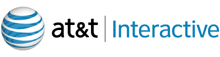

Sponsors
Interested in sponsoring the conference? Download the prospectus.
Integrum emphasizes business value, speed to market and open communication to build remarkable Ruby on Rails web applications.
It is so simple that it fits in under two hundred characters.
 Rely on Engine Yard: 80 people, two data centers, and four continents.
Rely on Engine Yard: 80 people, two data centers, and four continents.
Engine Yard came about in early 2006 because we saw a genuine need: customers were developing business-critical Rails apps, but they didn't want to worry about deployment issues, nor did they want to hire IT staff to manage servers. Instead, customers wanted Rails-focused 24/7 operations support, great infrastructure, and a smooth path from one to one million users.
We handle deployment and maintenance, so you can focus on building your application and running your business. Our deep roots in the Ruby and Rails communities, combined with our commitment to driving the next generation of Ruby technologies, offer our customers the peace of mind of knowing their applications are managed by a team of true technical experts.
Engine Yard is invested in the future of Ruby and Rails communities, and is helping foster and lead development by supporting open source projects like Merb and Rubinius.

IronRuby is a .NET implementation of the Ruby programming language. We are building a high-quality implementation of Ruby, with excellent performance and seamless integration with .NET libraries and infrastructure. IronRuby heavily leverages Microsoft's Dynamic Language Runtime, and both are released with full source code under the Microsoft Public License. The IronRuby source code is hosted on Rubyforge, which is a home for open source Ruby projects. We're looking for contributions to the IronRuby libraries; our goal is to achieve parity with the Ruby standard libraries.
Founded in 2005, we're focused on making simple things simple and complex things possible. The good folks who bring you Mozy are located in Pleasant Grove, Utah and are part of Decho Corporation.
We believe:
- You shouldn't have to think about backup.
Backup should be set up once, and then work automatically. - Your files should be encrypted.
Your backup files should be encrypted and stored in a secure, remote location that's only accessible to you — from anywhere. - Your backups should be smart.
Your backup system should be smart enough to only back up data that's not already been backed up, only back up parts of a file that have changed, and be able to back up open and locked files.

AT&T Interactive is devoted to creating compelling experiences that connect people, businesses and places so everyone can more easily engage with their world, wherever they work, live or play.
We have a passion for the Internet, mobile applications and emerging media platforms, and are proud to nourish a collaborative, tech-driven culture that promotes innovation, the entrepreneurial spirit and a desire to enhance everyone's daily lives.
As a tech-driven company, AT&T Interactive is always looking for passionate talented individuals who can solve difficult problems and develop new and existing products to exceed consumer expectations and drive value for our advertisers - whether it's online, mobile, interactive TV, video or other media platforms.
About
The single-track conference is two full days for just $100. It is a terrific opportunity to rub elbows with some of the smartest Rubyists around. We have a great list of presenters with compelling presentations.
March 13-14, 2009
Salt Lake City Public Library
210 E 400 S
Salt Lake City, UT 84111
8:00 AM - 6:00 PM (both days)
[map]
Sponsors


Links
MountainWest RubyConf is brought to you by MountainWest Ruby, LLC. We are committed to promoting and supporting the Ruby community.